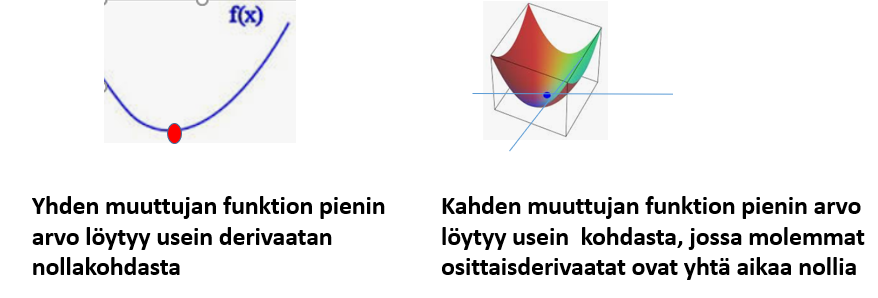
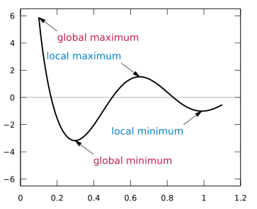
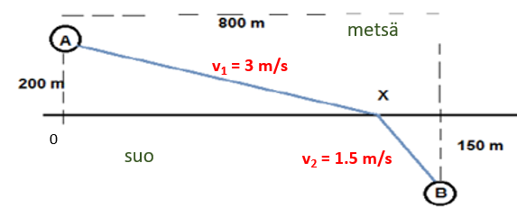
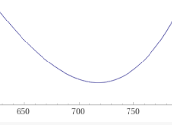
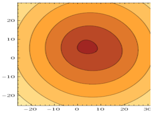
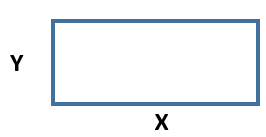
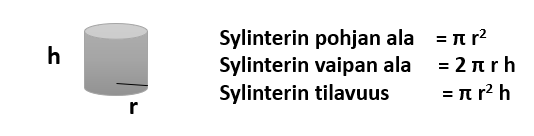
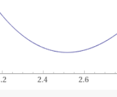

Optimointimenetelmiä
Contents
Optimointimenetelmiä¶
Ääriarvotehtävissä tavoite on löytää funktion suurin tai pienin arvo.
Käytännön sovelluksina ovat erilaiset optimointiprobleemat, joissa halutaan esim. maksimoida tuottoa tai minimoida materiaalin käyttöä ym. kuluja.
Funktiossa, jonka suurinta tai pienintä arvoa etsitään, voi olla yksi tai useampi muuttuja

Yhden muuttujan funktion ääriarvo¶
Funktiolla voi olla kahdenlaisia ääriarvoja. Globaali maksimi tai globaali minimi tarkoittaa funktion suurinta tai pienintä arvoa koko määritysjoukossa.
Lokaali maksimi tai globaali minimi ovat paikallisia ääriarvoja, jotka ovat funktion suurimpia ja pienimpiä arvoja jossakin suppeammassa ympäristössä.
Jatkuvalla yhden muuttujan funktiolla voi olla globaaleja ääriarvoja derivaatan nollakohtien lisäksi määrittelyvälin päätepisteissä ja sellaisissa kohdissa, missä derivaatta ei ole jatkuva (esim. käyrällä olevat kärjet).

Seuraavissa esimerkeissä etsitään globaaleja ääriarvoja derivaatan nollakohdista.
Esim. Lentävän ammuksen lentoradan korkeuskoordinaatti y riippuu ajasta t kaavan \(y = 40 +320 t-4.9 t^2 \) mukaisesti. Määritä lentoradan korkein kohta.
Vastaus: \(y_{max}= 5264\) m
Ratkaisu
y-koordinaatin lauseke on 2. asteen polynomifunktio, jossa \(t^2\):n kerroin on negatiivinen. Lausekkeen kuvaaja on alaspäin aukeava paraabeli, jonka huippukohdassa derivaatta on nolla. Lasketaan huipun koordinaatit.
Huipun t: D (\(40 +320 t-4.9 t^2\)) = 320 - 9.8 t = 0 => t = 320/9.8 = 32.65 s
Huipun y: \(y_{max} = 40 + 320\cdot 32.65 - 4.9\cdot {32.65}^2 = 5264.4 \)
Vastaus: Radan korkein kohta on 5264 m . Se saavutetaan ajanhetkellä 32.65 s.
Esim. Suunnistaja siirtyy metsässä olevalta rastilta A suolla olevalle rastille B (ks. kuva alempana). Juoksunopeus metsässä on 3.0 m/s ja suolla 1.5 m/s. Määritä kohta X siten, että juoksuaika A:sta B:hen on minimissään.

Vastaus: \(x = 718 m\)
Tapa1: derivaatan nollakohdan etsiminen
Välillä AB kuluva aika t on metsässä ja suolla kuluvien aikojen summa:
\(t=\frac{\sqrt{200^2+x^2}}{3.0}+\frac{\sqrt{150^2+(800-x)^2}}{1.5}\) (aika=matka/nopeus)
Ratkaisu WoframAlphalla:
Derivaatan nollakohta: \(\color{red}{\text{solve D}(\frac{\sqrt{200^2+x^2}}{3.0}+\frac{\sqrt{150^2+(800-x)^2}}{1.5}=0,x)}\) antaa tulokseksi \(t\approx 717.562\).
Sen, että kyseessä on minimikohta, voi varmistaa piirtämällä t(x):n lausekkeen esim. välillä [500,800]:
\(\color{brown}{\text{plot }\frac{\sqrt{200^2+x^2}}{3.0}+\frac{\sqrt{150^2+(800-x)^2}}{1.5}\text{from 600 to 800}}\)

Tapa2: laskimen minimize toiminto
Komento \(\color{brown}{\text{minimize }\frac{\sqrt{200^2+x^2}}{3.0}+\frac{\sqrt{150^2+(800-x)^2}}{1.5}}\)
antaa tulokseksi \(\text{min}\{\frac{\sqrt{200^2+x^2}}{3.0}+\frac{\sqrt{150^2+(800-x)^2}}{1.5}\}\approx 362.4\text{ at }x\approx 717.562\)
Ääriarvot algebralaskimissa
Algebralaskimissa on ääriarvojen etsimiseen valmiit funktiot (esim. TI-CAS laskimissa FindMaximum, FindMinimum).
WolframAlpha - online laskimessa vastaavat komennot ovat maximize ja minimize. Edellinen esimerkki olisi voitu ratkaista W.A:ssa yhdellä komennolla:
maximize 40 +320 t-4.9 t^2 , joka antaa ratkaisun muodossa
max{40+320 t - 4.9 t^2} \(\approx \) 5264.5 at t\(\approx\) 32.653
Usean muuttujan funktion ääriarvo¶
Kahden muuttujan funktion z = f(x,y) kuvaaja on 3D -avaruuden pinta. Mikäli funktiolla on suurin tai pienin arvo, ne näkyvät pinnassa huippuina tai kuoppina.
Ääriarvokohdassa usein molemmat osittaisderivaatat saavat arvon nolla (tangentit x- ja y-suunnissa ovat vaakasuoria)
Etsi piste P=(x,y), jonka kolmesta kiinteästä pisteestä A(3,8), B(14,2) ja C(1,5) laskettujen etäisyyksien summa on mahdollisimman pieni.
Vastaus: \(P = (3.17, 6.63)\)
Tapa1. Yhtälöpari, joka ratkaistaan W.A:lla tai algebralaskimella
\(\color{brown}{\text{solve D}(\sqrt{(x-3)^2+(y-8)^2}+\sqrt{(x-14)^2+(y-2)^2}+}\)
\(\color{brown}{\sqrt{(x-1)^2+(y-5)^2},x)=0,D(\sqrt{(x-3)^2+(y-8)^2}+}\)
\(\color{brown}{\sqrt{(x-14)^2+(y-2)^2}+\sqrt{(x-1)^2+(y-5)^2},y)=0}\)
antaa tuloksen \(x\approx 3.17, y\approx 6.63\)
Komento on varsin pitkä ja voi olla, ettei mahdu W.A:n syöttösoluun
Tapa2. W.A:n mimimize komennon käyttö
\(\color{brown}{\text{minimize }\sqrt{(x-3)^2+(y-8)^2}+\sqrt{(x-14)^2+(y-2)^2}+}\)
\(\color{brown}{\sqrt{(x-1)^2+(y-5)^2}}\hspace{5mm}\) antaa tuloksen \(x\approx 3.17, y\approx 6.63\)
Komento on lyhyempi ja mahtuu syöttösoluun
Tapa3. W.A:n grafiikkakomento ContourPlot
\(\color{brown}{\text{contourplot }\sqrt{(x-3)^2+(y-8)^2}+\sqrt{(x-14)^2+(y-2)^2}+}\)
\(\color{brown}{\sqrt{(x-1)^2+(y-5)^2}}\)
antaa korkeuskäyräkuvan pinnasta. Minimi löytyy tummasävyisimmästä kohdasta.

Ehdolliset ääriarvot (constraint minima/maxima)¶
Monissa sovelluksissa optimoitava funktio sisältää useita muuttujia, joita kuitenkin sitovat toisiinsa rajoittavat ehdot. Ehtoja hyödyntäen muuttujia voidaan eliminoida siten, että loppujen lopuksi kyse on yhden muuttujan funktion ääriarvotehtävästä.
Tämän tyyppisistä tilanteista käytetään englanninkielisie termejä constraint maximum ja constraint minimum. Sana constraint käännetään suomeksi rajoite
Esimerkki
Määritä sellaisen suorakulmion suurin mahdollinen pinta-ala, jonka piirin pituus on 500.

Merkitään suorakulmion sivuja x:llä ja y:llä. Ongelma voidaan muotoilla matemaattisesti seuraavalla tavalla:
Maksimoi x y ehdolla 2x + 2y = 500
Ratkaisumenetelmiä:
Tapa1: muuntaminen yhden muuttujan funktion ääriarvotehtäväksi:
Ratkaistaan y ehdosta 2x+2y=500 muuttujan x funktiona: y = 250 - x
Muunnetaan maksimoitava lauseke yhden muuttujan funktioksi kohdasta 1) saadulla sijoituksella ja sievennetään:
Ala \(A = x y = x (250 - x) = 250 x - x^2\)Etsitään derivaatan nollakohta: \(D(250 x - x^2)\) = 250 - 2x = 0 => x = 125
Lasketaan toisen sivun pituus y = 250 - x = 250 - 125 = 125
Kohdassa 2) saadun funktion \(250 x-x^2\) kuvaaja on alaspäin aukeava paraabeli, jolla tunnetusti on derivaatan nollakohdassa maksimi. (kuvaa ei tarvita)
Tapa2: WolframAlphan ehdollisen ääriarvon ratkaisutoiminto:
WolframAlhassa Maksimoi x y ehdolla 2x + 2y = 500 voidaan ratkaista suoraan komennolla, joka on melkein suora käännös em. lauseesta:
\(\color{red}{\text{maximize x*y on 2x+2y=500}}\)
Vastaus tulee muodossa \(\color{blue}{\text{max{x y|2 x + 2 y = 500} = 15625 at (x, y) = (125, 125)}}\)
Siitä löytyy paitsi suorakaiteen sivujen mitat x=y=125, myös suurin pinta-ala, joka on 15625.
Tapa3: Lagrangen menetelmä (Sopii laajan matematiikan kurssilla esitettäväksi)
Ranskalainen 1700-luvun matemaatikko Lagrange kehitti seuraavanlaisen menetelmän ehdollisten ääriarvojen ratkaisuun:
Jos f(x,y) on optimoitava funktio, jossa muuttujia sitoo ehto g(x,y) = c (c = vakio), muodostetaan näistä lisäparametrin \(\lambda\) sisältävä ns.
Lagrangen funktio \(L = f(x,y)- \lambda \cdot (g(x,y)-c)\)
Ääriarvo löytyy kohdasta, jossa Lagrangen funktion osittaisderivaatat \(\frac{\partial L}{\partial x},\frac{\partial L}{\partial y}\text{ ja }\frac{\partial L}{\partial \lambda}\) ovat nollia.
Esimerkissämme Lagrangen funktio on \(L = x\cdot y-\lambda \cdot (2x+2y-500)\)
Osittaisderivaatat ovat \(\frac{\partial L}{\partial x}=y-2\lambda\text{, }\frac{\partial L}{\partial y}=x-2\lambda\text{ ja }\frac{\partial L}{\partial \lambda}=2x+2y-500\). Merkitään ne kaikki nolliksi ja ratkaistaan yhtälöryhmä komennolla
\(\color{red}{\text{solve }y-2\lambda =0, x-2\lambda =0 , 2x+2y-500=0}\).
Ratkaisu on x = 125, y = 125 ja \(\lambda = 62.5\)
Vastaus on siis sama kuin aiemmilla menetelmillä: x = y = 125.
Seuraavassa esimerkissä tarvitaan sylinteriin liittyviä kaavoja: 
Tynnyrin materiaalin kulutuksen minimin etsiminen
Määritä sellaisen 100 litran tynnyrin mitat (pohjan säde r ja korkeus h), jonka pinta-ala on mahdollisimman pieni.
Pinta-alaan kuuluu pohja ja kansi, ja vaippa. Niiden yhteispinta-ala \(A = 2\pi r^2 + 2\pi r h\)
Niitä rajoittaa ehto, jonka mukaan tilavuus \(V = \pi r^2 h = 100 {dm}^3\).
Ongelman matemaattinen muotoilu on seuraava:
Minimoi \(2\pi r^2 + 2\pi r h\) ehdolla \(\pi r^2 h = 100\)
Ratkaisumenetelmiä:
Tapa1: muuntaminen yhden muuttujan funktion ääriarvotehtäväksi:
Ratkaistaan tilavuusehdosta h muuttujan r funktiona: \(h = \frac {100}{\pi r^2}\)
Muunnetaan maksimoitava lauseke yhden muuttujan funktioksi kohdasta 1) saadulla sijoituksella ja sievennetään:
Ala \(A = 2\pi r^2 + 2\pi r h = 2\pi r^2 + \frac {100\cdot 2\pi r}{\pi r^2}=2\pi r^2 + \frac {200}{r}\)Etsitään derivaatan nollakohta: \(D(2\pi r^2 + \frac {200}{r}) = 4\pi r-\frac {200}{r^2}=0 => r = 2.52\)
Lasketaan korkeus \(h = \frac {100}{\pi r^2}= \frac {100}{\pi 2.52^2}= 5.01\)
Varmistutaan vielä, että kyseessä on minimi piirtämällä kuva A:n lausekkeesta välillä [2,3]. \(\color{red}{\text{plot }2\pi r^2 + \frac {200}{r}\text{ from 2 to 3}}\)

Tapa2: WolframAlphan ehdollisen ääriarvon ratkaisutoiminto:
WolframAlhassa ratkaisu tulee helposti yhdellä komennolla
\(\color{red}{\text{minimize } 2\pi r^2 + 2\pi r h\text{ on }\pi r^2 h=100}\)
Vastaus tulee muodossa \(\color{blue}{\text{min{2 π r^2 + 2 π r h|π h r^2 = 100}≈119.265 at (h, r)≈(5.0308, 2.5154)}}\)
Siitä löytyy r, h sekä tynnyrin pinta-ala minimikohdassa, joka on \(119 dm^2\)